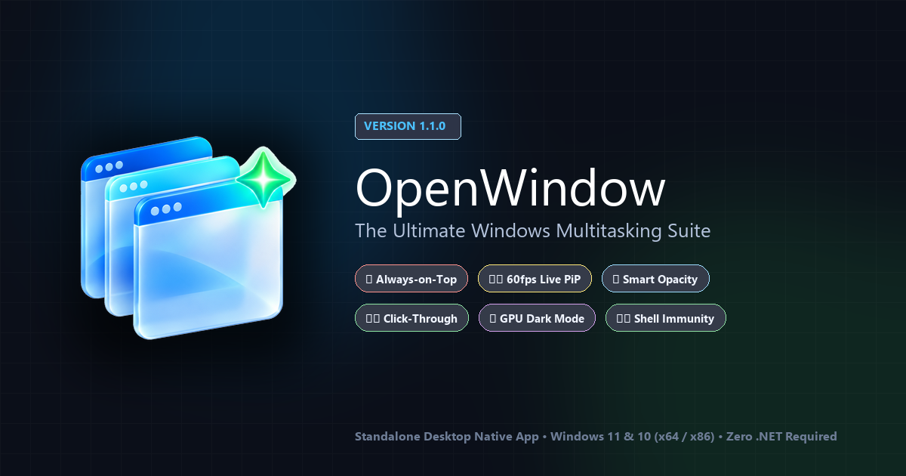

Dock floating controls directly inside any window's titlebar. Enforce Always-on-Top with an autonomous watchdog, stream 60 FPS Picture-in-Picture, reveal opacity on background hover, and invert colors via GPU dark mode.
See OpenWindow running natively on Windows 11. Docked in the active titlebar without interfering with native window controls.

Crafted from first principles in C# .NET 8 using raw Windows User32 and DWM APIs for sub-millisecond execution with zero framework bloat.
Mirror any window or crop exact sub-regions with full 1:1 interactive mouse control (left/right clicks, context menus, wheel scrolling, and dragging). Ghost Mode keeps browser tabs streaming at 60 FPS without background throttling.
Full-screen apps and video players constantly steal top-level Z-order. OpenWindow runs an autonomous background watchdog that enforces pinned windows stay on top without UI flicker.
Keep your window translucent to reference documents underneath. Move your mouse over the window from any other application, and it instantly reveals 100% solid opacity with zero click required.
Turns the client area completely click-permeable via WS_EX_TRANSPARENT, allowing clicks to pass directly to windows underneath while keeping the titlebar controls fully responsive.
Working late with blinding white PDF viewers or legacy Win32 utilities? OpenWindow applies a direct hardware color inversion matrix at zero CPU cost to preserve your vision.
Built-in ShellSanitizer filter permanently shields the Windows Taskbar, Start Menu, System Tray, Action Center, and Game Bar from accidental pin or transparency capture.
Floating toolbars and topmost borders strictly enforce SWP_NOACTIVATE and transparent hit-testing. Keystrokes are never lost in code editors or games, wrapped in gorgeous frosted glass styling.
Built-in CrashReporterService catches unhandled exceptions, writes forensic JSON dumps to AppData, and can dispatch encrypted telemetry pings to your private Discord, Telegram, or HTTP webhook.
Whether you are debugging kernel code, monitoring order books, or reference-drawing, OpenWindow removes window friction.
Keep API specifications, Postman, terminal build outputs, or database query results pinned on top of your IDE with 80% opacity and auto-hover reveal.
Monitor real-time depth charts, candlestick order books, and macro news feeds in a 60 FPS live picture-in-picture window while analyzing multi-monitor feeds.
Overlay reference art directly onto Photoshop, Figma, or Blender canvases. Turn on click-through mode to paint directly beneath the reference overlay.
Keep Twitch chat, Discord stream overlays, or interactive walkthrough guides pinned above borderless full-screen games without dropping a single frame.
Every capability is mapped to lightning-fast global shortcuts that trigger instantly, even when other applications have exclusive focus.
Measured live on Windows 11 Enterprise (Build 26100) running with active hardware DWM composition.
Zero active timers during idle state; wakes only on input events
Ultra-lean native footprint compared to 400MB+ Electron utilities
Direct GPU surface compositing without software frame scraping
Sub-millisecond alpha restore powered by low-level mouse hooks
WindowTop made titlebar multitasking popular. OpenWindow completely modernizes it: 100% free under MIT License, unlocked native .NET 8 performance, interactive PiP mouse control, and zero paywalls.
| Feature & Capability | OpenWindow (v1.1.3) | WindowTop (Commercial) |
|---|---|---|
| Pricing & License | 100% Free & Open-Source (MIT) | Paid / Freemium ($18.99+ License) |
| Picture-in-Picture Control | Full 1:1 Interactive Mouse (Click, Right-Click, Scroll, Drag) in Full & Cropped Views | Passive preview; basic click-through only |
| Ghost Mode (Tab Streaming) | 60 FPS DWM streaming; zero browser tab throttling or WebSockets freezing | Standard window minimization / background throttling |
| Always-on-Top Input Non-Blocking | Guaranteed non-activating (SWP_NOACTIVATE); keystrokes never lost in games/code | Occasional input focus stealing on toolbar clicks |
| Hover Opacity Reveal | Global 0ms reveal across inactive/background windows without clicking | Requires window focus or active hover setting |
| Windows Shell & Taskbar Immunity | ShellSanitizer permanently shields Taskbar, Tray flyouts, and Desktop | Occasional z-order glitches with auto-hide taskbar |
| Crash Diagnostics & Telemetry | Sanitized local JSON crash dumps + opt-in developer webhook telemetry | Closed-source commercial analytics |
| Runtime Dependencies | Standalone native self-contained executables (zero .NET install needed) | Requires runtime setup & activation servers |
Completely standalone, offline-capable executables. No installer or administrative rights required.
For Windows 11 & Windows 10 (all modern Intel/AMD processors)
For legacy 32-bit Windows 10 installations and embedded thin clients
@Abido-3tta (CodeByAtta) • Reverse Engineering & Systems Specialist
Architecting sovereign, high-concurrency desktop tools and reverse-engineering frameworks. Built OpenWindow with zero third-party runtimes, direct DWM hardware hooks, and sub-millisecond responsiveness.